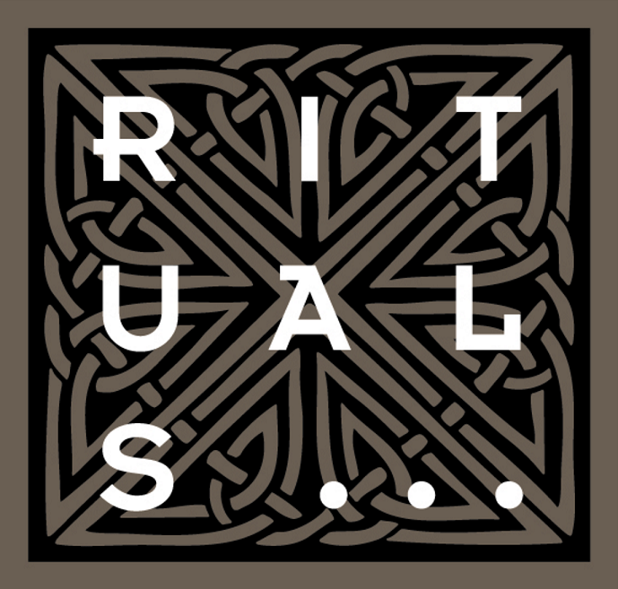
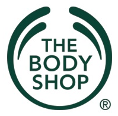
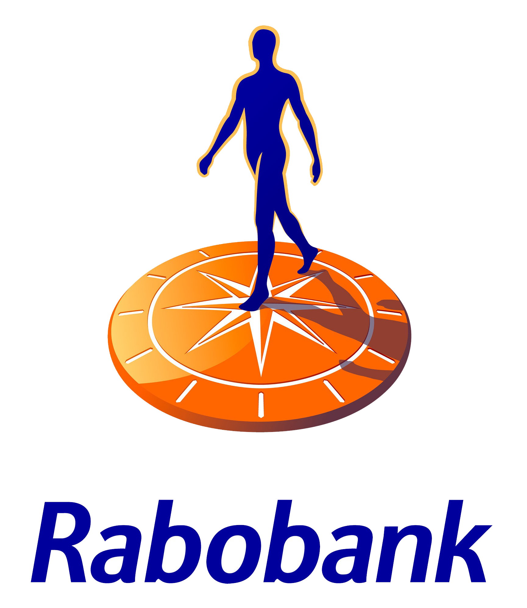
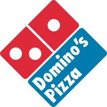
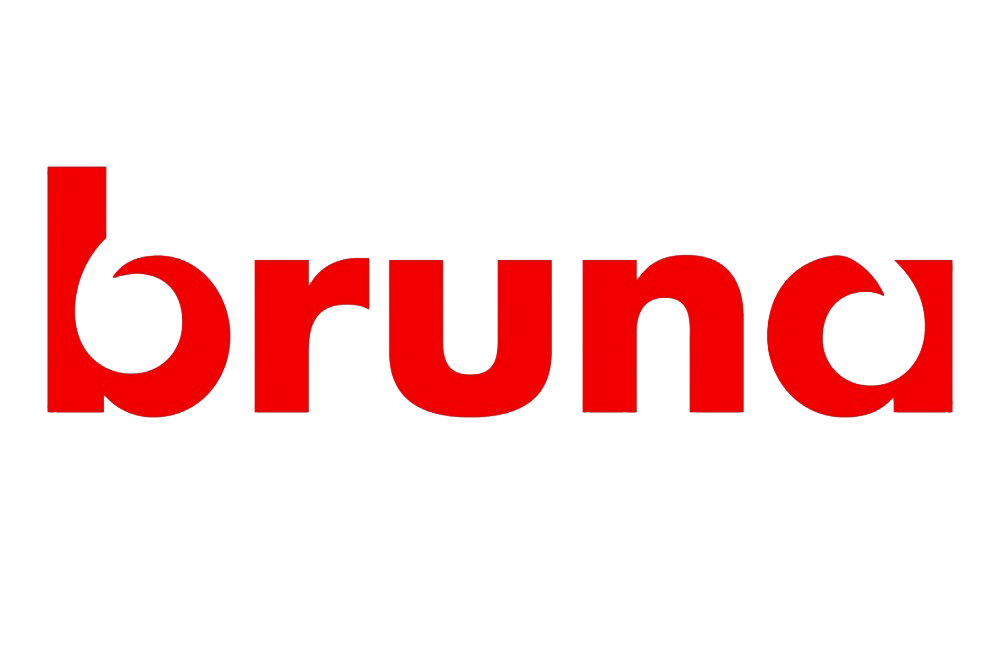
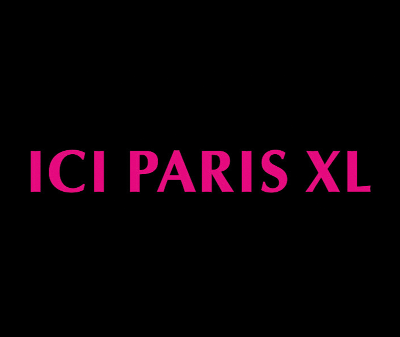
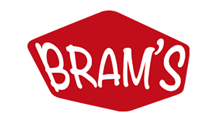
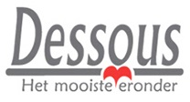

ScalaMUN
Ready for Takeoff!
Home
Committees
Security Council
Historical Crisis committee
Human Rights Council
Economic Environmental Council
Technology and Innovation Council
Venue
Who are we?
Social Media
Sponsors
Contact
Menu
Our Sponsors
  

 
 
Tweets by ScalaMUN